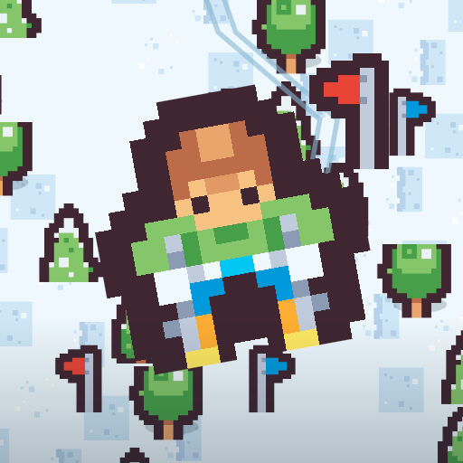

Slalom Postcards
Ski 24 snowy slopes, skim the gold edge of each gate, stamp your mountain postcards.
Slalom Postcards is a portrait skiing game about finding your rhythm in a tiny winter world. Drag sideways or hold the left and right buttons to steer. Pass between numbered gates to build flow, and skim the gold edge for a 40-point precision bonus. Clear the required number of gates and reach the checkered finish. Three collisions end the run. There are 24 slopes across four mountain routes, Crystal Pass, Blue Summit, Sunset Ridge and Pine Valley, with 18 to 24 gates each. Watch for trees, rocks, stumps and fallen logs. Ice slows your steering, and snow bumps cut your speed. Campaign medals add stamps to four illustrated postcards and unlock the next slope. You can also try all 24 courses in open practice, return for a dated daily challenge, or link descents in endless mode. Tokens unlock skier color tints that do not change performance. Offline, no account, in English, Spanish and Brazilian Portuguese. Free with ads at session breaks and an optional video that doubles a result's tokens.